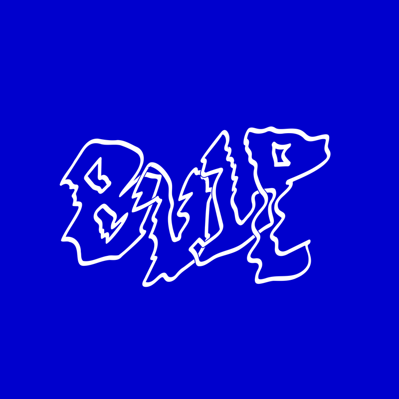

Daarom willen we een voorstel doen,
door te omarmen van wat is.
Een poging om te laten zien dat creatief zijn waarde heeft en verbindend werkt.
Wij stellen een mogelijkheid voor om elkaars creativiteit terug zichtbaar te maken op lokale wijze.
Dat is 
Een moment waarop we iedereen aanzetten vanuit hun huis de straat te verlichten met projecties, schermen of ander licht.
21/11/2020 // 19:00-22:00